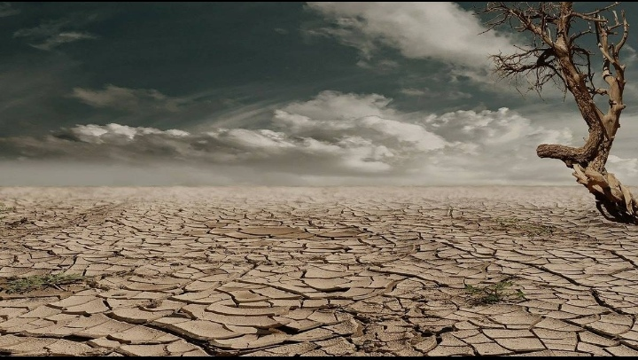

DROUGHT

A drought is an event of prolonged shortages in the water supply, whether atmospheric (below-average precipitation), surface water or ground water. A drought can last for months or years, or may be declared after as few as 15 days.It can have a substantial impact on the ecosystem and agriculture of the affected region and harm to the local economy.Annual dry seasons in the tropics significantly increase the chances of a drought developing and subsequent bush fires. Periods of heat can significantly worsen drought conditions by hastening evaporation of water vapour.
Throughout history, humans have usually viewed droughts as "disasters" due to the impact on food availability and the rest of society. Humans have often tried to explain droughts as either a natural disaster, caused by humans, or the result of supernatural forces. It is among the earliest documented climatic events, present in the Epic of Gilgamesh and tied to the Biblical story of Joseph's arrival in and the later Exodus from Ancient Egypt. Hunter-gatherer migrations in 9,500 BC Chile have been linked to the phenomenon,[7] as has the exodus of early humans out of Africa and into the rest of the world around 135,000 years ago.[8] Rituals exist to prevent or avert drought, rainmaking could go from dances to scapegoating to human sacrifices. Nowadays, those ancient practices are for the most part relegated to folklore and replaced by more rational water management.